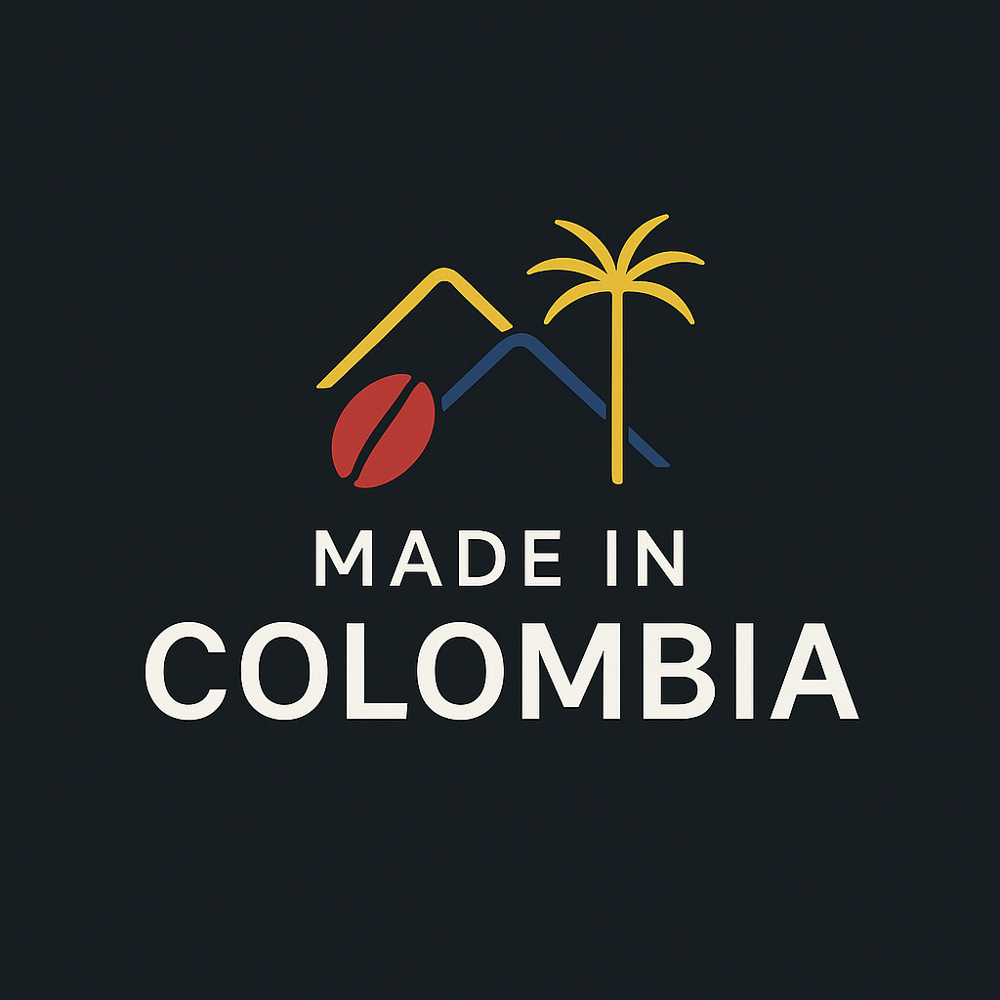

Made in Colombia was born from a deep love for our roots and desire to share the true essence of Colombia with the world. What started as a simple idea to showcase the beauty we grew up with quickly became a mission to highlight the stories, colours, and traditions that make our country so unique.
This website is part of a personal project that began during my time as a web development student at college, combining my passion for design, culture, and storytelling. I saw a need for a space where both Colombians and curious traveler could connect with the soul of Colombian in a modern, authentic way.

It's not just a project, it's my way of saying: THIS IS WHO WE ARE.